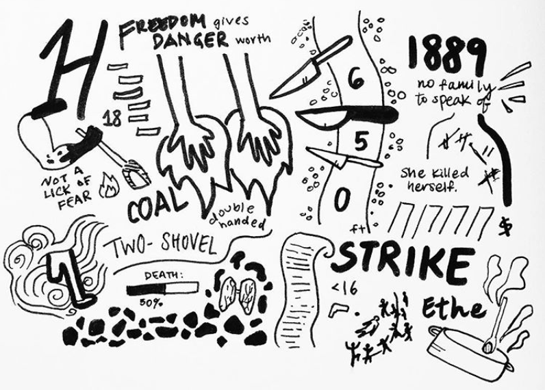
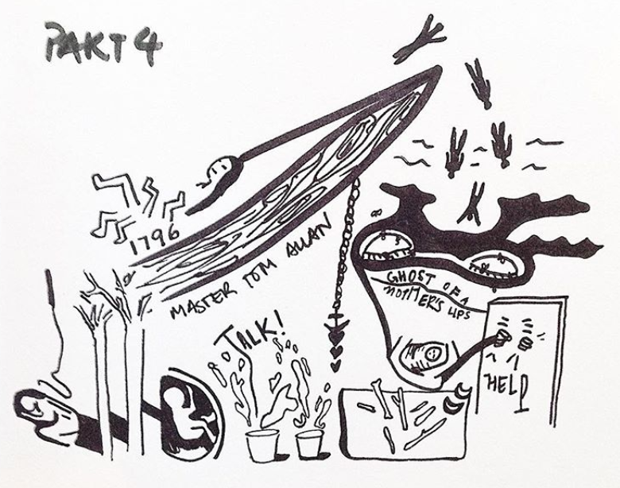
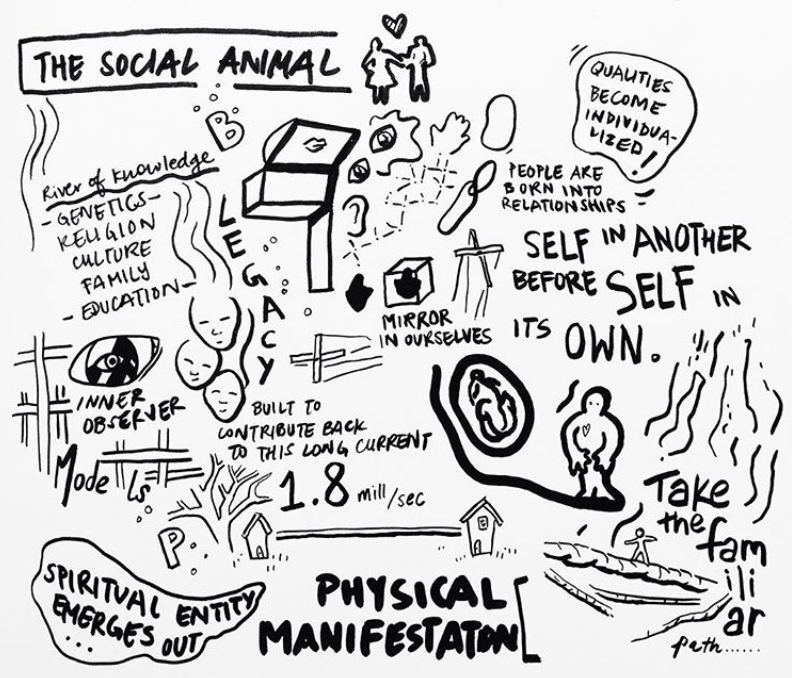
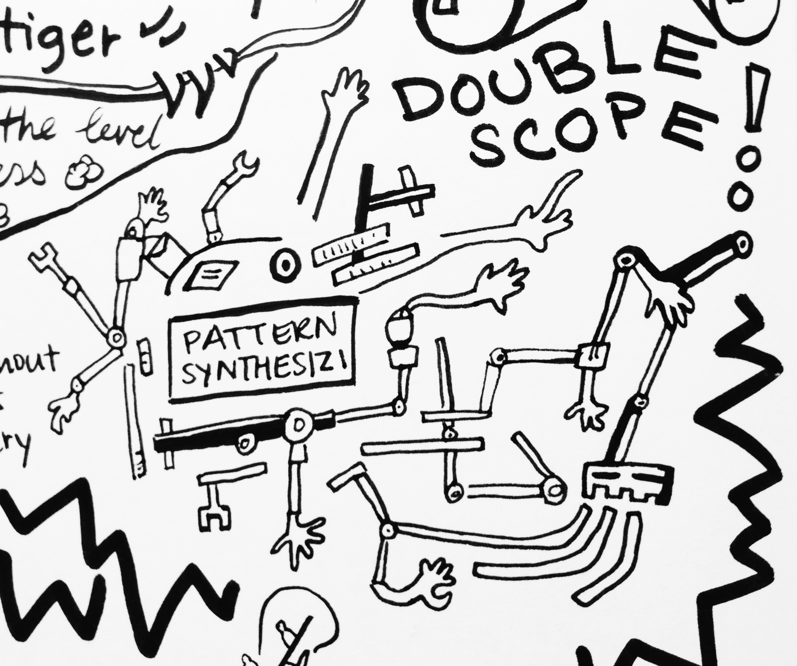

×


CONCEPT
I grew up in hong kong, one of the densest cities. I have always been fascinated by the most basic of containers, our skin, and how its compression can simultaneously represent confinement, intimacy and adaptability.
INVESTIGATION OF GROWTHS IN CONFINED SPACES
One night I ate a bowl of pistachios and I imagined making flesh-like folds in the shells.
PRODUCT
This abstract representation of flesh in the womb reflects the movement of the masses, how we are contained, and how our containment increases our tendency to order our environment.

×
READING MARKS
When reading, I like drawing along the way. It encourages me to notice symbolism and imagery. I also build stronger connections when making my own visualisations for prominent ideas.
HOMEGOING BY YAA GYASI
 THE SOCIAL ANIMAL BY DAVID BROOKS
 